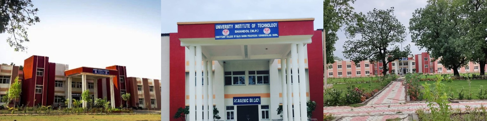

Engineering College, Shahdol — Educational Visit
29 September 2026 ka din mere liye bahut khaas aur yaadgaar raha. Us din hamare vidyalay dwara hame Engineering College, Shahdol ke shaikshanik bhraman par le jaya gaya.
Is bhraman ka uddeshya hame engineering college ke vatavaran, laboratories, library aur practical activities ke baare mein jaankari dena tha.
Hum sabhi vidyarthi bus se college pahunche. College pahunchkar humne wahan ki alag-alag laboratories aur library ko dekha.
College ke campus aur academic block ko dekhkar mujhe higher education ke environment ko samajhne ka achha avsar mila.
Chemistry, Physics aur Computer labs ko dekhkar mujhe practical education ke mahatva ko samajhne ka avsar mila.
Workshop aur practical activities ke baare mein bhi hame useful information di gayi. Isse mujhe engineering education ko aur kareeb se samajhne ka mauka mila.
Is poore bhraman ke dauran maine bahut kuch naya seekha. Is anubhav ne mere andar engineering aur technical education ke prati aur adhik ruchi paida ki.
Teachers ne hame college ke environment, education aur future opportunities ke baare mein bahut si useful information di.
Yah yatra mere liye sirf ek educational tour nahi thi, balki mere future dreams ki taraf ek chhota sa kadam bhi thi.
Date
29 September 2026
Place
Shahdol, Madhya Pradesh
Purpose
Educational Visit